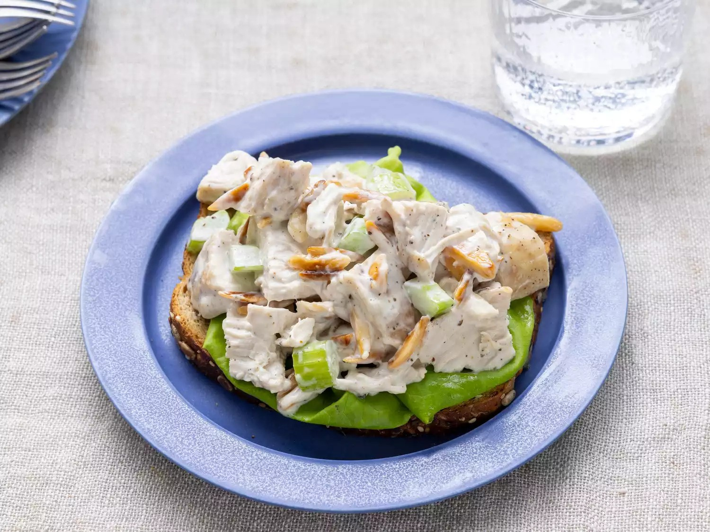

Best Chicken Salad

Description
This delightful chicken salad is a perfect blend of flavors and textures,
making it a versatile dish that can be enjoyed year-round. Whether served as a light lunch,
a side dish at a summer barbecue, or as a filling for sandwiches, this salad is sure to impress.
For the best results, we recommend using Costco rotisserie chicken, seasoned with fragrant rosemary and basil,
to add a delicious depth of flavor.
Ingredients (2 servings)
- ½ cup blanched slivered almonds
- ½ cup mayonnaise
- 1 tablespoon lemon juice
- ¼ teaspoon ground black pepper
- 2 cups chopped, cooked chicken meat
- 1 stalk celery, chopped
Directions
- Gather all ingredients
- Place almonds in a frying pan. Toast over medium-high heat,
shaking frequently. Watch carefully, as they burn easily.
- Mix together mayonnaise, lemon juice, and pepper in a medium bowl.
- Toss with chicken, toasted almonds, and celery.
- Serve however you perfer and enjoy!
Back to the menu